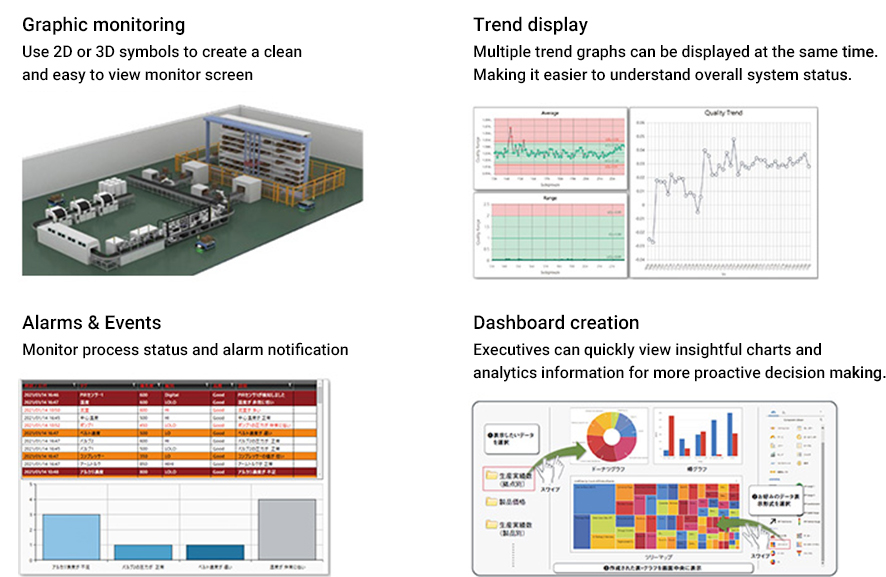
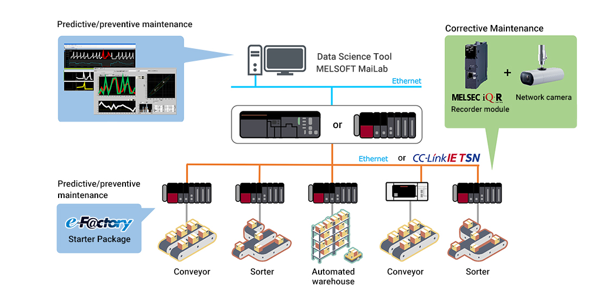
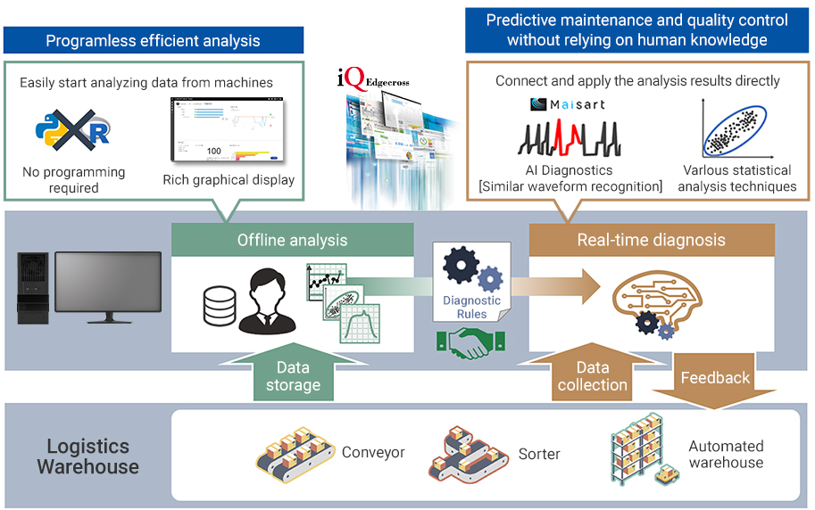
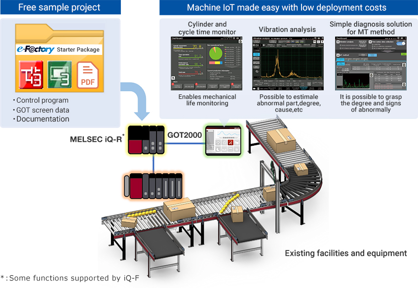
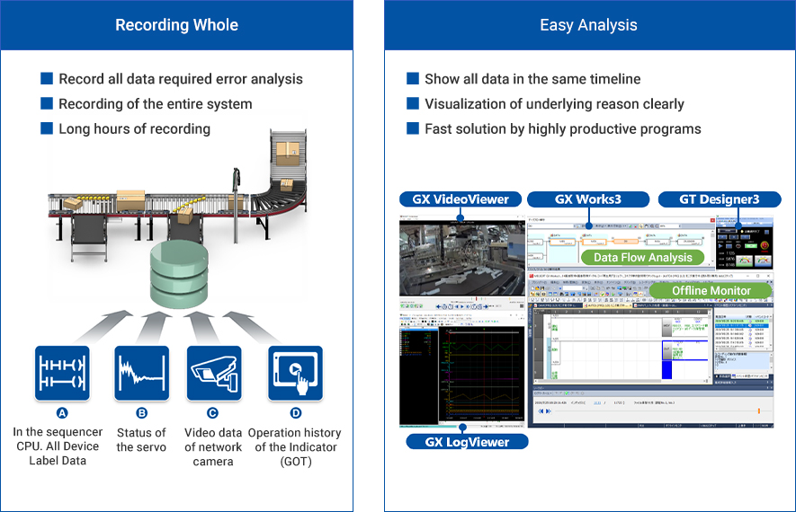
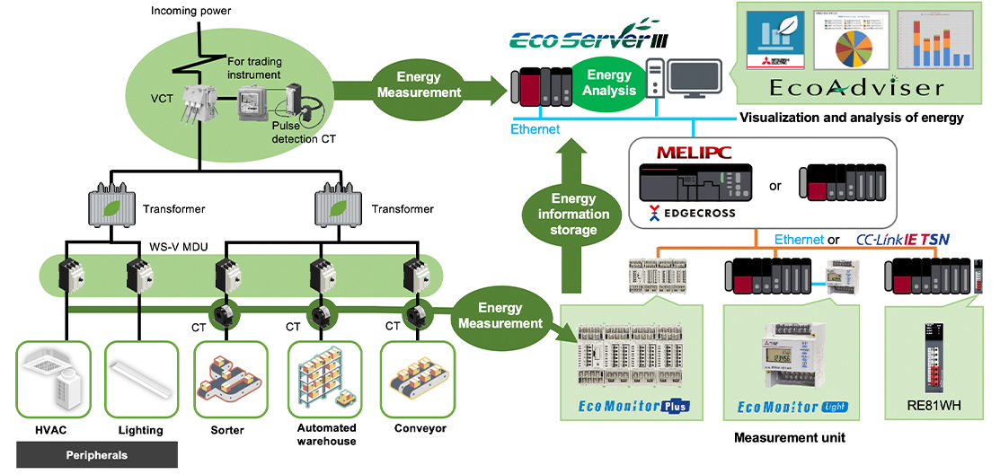
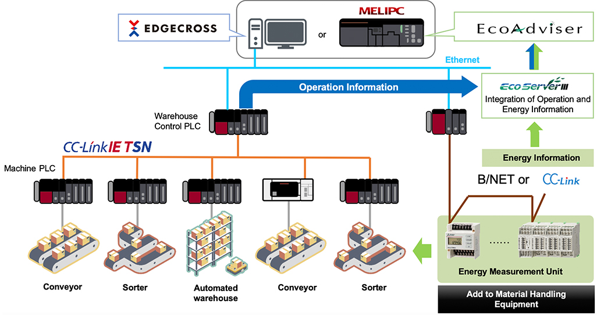
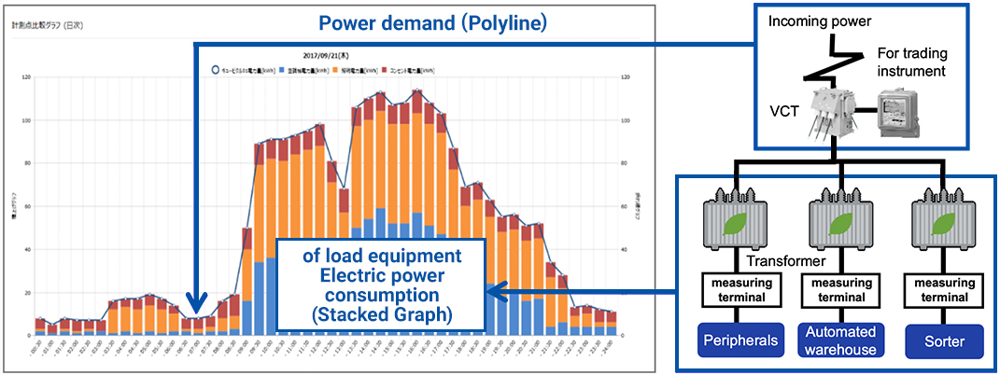

Solutions
Logistics

Distribution warehouse
- Visualization through real-time data collection
- Predictive and preventive maintenance at the warehouse/machine/equipment level
- Energy saving solution
Solutions to the Issues
| Issues | Solutions |
|---|---|
| Improvement of utilization rate (Remote monitoring of error information, etc.) |
24 hours 365 days Visualization through real-time data collection |
| ❶ Ensuring non-stop operation of warehouse equipment ❷ Reduction of downtime (Reduction of material handling maintenance costs, etc.) |
❶ With AI and edge computing technology Predictive and preventive maintenance at the warehouse/machine/equipment level ❷ With a system recorder and general-purpose camera corrective maintenance solution |
|
|
1. Visualization through real-time data collection
(Remote monitoring of error information, etc.)
Visualization through real-time data collection
System Configuration
Local and remote monitoring of the warehouse operation status with GENESIS64™

feature
Powerful monitoring from entire warehouse to individual machines

Remotely monitor and maintain your entire warehouse anytime, anywhere
By using the remote monitoring function of GENESIS64, remote monitoring and maintenance via the Internet is possible.
With the WebHMI/MobileHMI function, you can monitor any device anytime, anywhere.
It also has a function to notify you by e-mail when an alarm is detected.
Remote monitoring and maintenance of entire warehouse anytime, anywhere via cloud
By using the IoT communication function for the cloud of GENESIS64, it is possible to collectively monitor multiple warehouses via the cloud.
By linking with Microsoft's Azure, it is possible to communicate securely with the cloud.
Solution Examples
Real-time Monitoring Improves Plant Utilization by 38%!
Company A, which had been unable to increase operating rates, wanted to investigate the cause and make improvements. By introducing a system to monitor new and old equipment crossing factories and processing machines from different manufacturers in an integrated manner, we succeeded in improving the operation rate by 38%. What's the secret?
Product Lineup
List of visualization tools by level

2. Predictive and preventive maintenance at the warehouse/machine/equipment level
❷ Reduction of downtime
(Reduction of material handling maintenance costs, etc.)
❷ With a system recorder and general-purpose camera corrective maintenance solution
System Configuration

feature
Realization of predictive / preventive maintenance at the warehouse level.
MELSOFT MaiLab is data analysis/diagnosis software that easily realizes preventive maintenance and quality improvement at the site.
AI / edge computing technology and statistical methods enable real-time diagnosis and offline analysis of field data in one product. Predictive maintenance is possible by extracting diagnostic rules by offline analysis of the accumulated data and feeding back the diagnostic results to the site in real time.

predictive / preventive maintenance at the material handling equipment level.
By utilizing the e-F@ctory Starter Package, it is possible to realize abnormality monitoring of various equipment and devices.

Corrective Maintenance at the material handling equipment level.
By using a system recorder, “Recording Whole” and “Easy Analysis” of system status in the event of an anomaly, can dramatically reducing downtime.

Solution Examples
Cycle Time Improved by 10% with Cylinder Monitoring!
Company “A” had concerns about low equipment performance, which lead to slow production speed and delayed production schedules. The company decided to introduce cylinder monitoring, and saw a 10% improvement in cycle time.
What was the secret to its success?
Reduced 93% Time Investigating The Cause of Equipment Trouble with The System Recorder!
Company A was unable to reproduce the error at the time of the equipment trouble in the automated assembly process, which is producing a large variety of products in small quantities, and it took time to investigate the cause. By introducing the 'system recorder' we succeeded in reducing the time needed to identify the cause by 93% and improving the OEE (Overall Equipment Effectiveness). What's the secret?
Identify the cause of problems fast. Achieves ZERO short stops!
Company A was troubled by short stops on equipment caused by rare problems. The company became able to identify the causes of the problems based on the equipment operation logs and video data that was recorded and eliminate short stops by taking permanent measures. This consequently improved equipment operating ratio. What is the secret to Company A’s success? What is the secret to its success?
Product Lineup
Zero down time is realized by predictive maintenance through data analysis and life diagnosis functions of each FA equipment.

3. Energy saving solution
Visualization of energy consumption
Eliminate wasted energy
Reduction of basic electricity charges
Visualization by energy-saving equipment
Energy data analysis by EcoAdviser
Demand management for the entire warehouse
Energy saving by inverter FREQROL
System Configuration

feature
Monitoring and analysis of energy consumption to help improve operations
EcoServer III consolidates energy consumption and operation information of material handling equipment and analyzes it with EcoAdviser to help improve operation

Reducing basic electricity charges by managing demand throughout the warehouse
“Peak shift and Peak cut” realized by energy measurement linked to demand period
Based on the results of the analysis, we can review the operating equipment and perform rotational operation of the air conditioning equipment to achieve peak shifts and peak cuts to limit instantaneous power demand.

Ability to view demand load curve graphs and trend graphs including forecasted demand graphs at a glance

Solution Examples
Using AI to Reduce Energy Analysis Man-hours by 92%!
Company A, took a great deal of time analyzing the energy data collected in the field of PCB mounting. AI-powered analysis tools reduced both energy and analysis efforts. What's the secret?
Visualization of Loss Reduces Energy Consumption by 4%
Company “A” wanted to reduce energy consumption. The company visualized the energy loss linked to the operating status of each equipment, and succeeded in reducing energy consumption of its production line by 4%. What was the secret to its success?